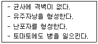
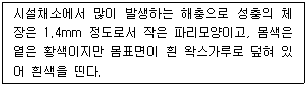
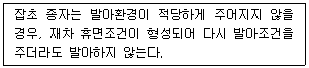

식물보호산업기사 (2011-03-20 기출문제)
1과목: 식물병리학
1. 벼 줄무늬잎마름병의 병원체를 옮기는 해충은?
- 애멸구
- 벼멸구
- 끝동매미충
- 번개매미충
(정답률: 93%)

2. 죽은 식물체에 증식하지 못하는 병원체는?
- 점균(끈적균)
- 진균
- 세균
- 바이러스
(정답률: 87%)
3. 건전한 종자선택과 철저한 종자소득으로 방제할 수 있는 병은?
- 벼 오갈병
- 벼 흰잎마름병
- 벼 잎집무늬마름병
- 세균성벼알마름병
(정답률: 60%)
4. 표징과 관계가 먼 것은?
- 균핵
- 빗자루
- 검은 돌기
- 버섯
(정답률: 71%)
5. 병원균이 토양에 의하여 전반하는 수목병은?
- 대추나무 빗자루병
- 잣나무 털녹병
- 밤나무 줄기마름병
- 사과나무 뿌리혹병
(정답률: 89%)
6. 벼 키다리병의 합리적인 방제법은?
- 매개충 방제
- 윤작
- 토양소득
- 종자소득
(정답률: 89%)
7. 식물병 발생에 필요한 3대요소가 아닌 것은?
- 병원체의 존재
- 적당한 환경
- 병징
- 감수성이 있는 식물
(정답률: 84%)
8. 코흐(Koch)가 제창한 식물병의 검정 원리 중 인공배양이 불가능한 병원균은?
- Septoria fragariae
- Botrytis cinerea
- Sphaerotheca humuil
- Sclerotium rolfsii
(정답률: 64%)
9. 기주특이적 독소가 아닌 것은?
- AM 독소
- HC 독소
- CC 독소
- tabtoxin
(정답률: 79%)
10. 세균의 일반적인 특징에 대한 설명으로 틀린 것은?
- 막대모양, 구형, 곤봉형, 나선형 등의 형태이다.
- 주로 편몰르 가지고 있지 않다.
- 주로 2분법에 의하여 증식한다.
- 세포벽이 있어 양분의 흡수와 대사부산물, 소화효소물질의 분비를 조절한다.
(정답률: 76%)
11. 주로 종자에 의하여 전염하는 병이 아닌 것은?
- 배추 무름병(연부병)
- 보리 겉깜부기병
- 고추 탄저병
- 벼 키다리병
(정답률: 68%)
12. 벼 도열병이 가장 많이 발생하는 환경은?
- 기온이 높고 일조가 모자라며 비가 적을 때
- 기온이 높고 일조가 많으며 비가 많을 때
- 기온이 낮고 일조가 모자라며 비가 많을 때
- 기온이 낮고 일조가 많으며 비가 적을 때
(정답률: 82%)
13. 세균이 주로 물관부에서 증식하여, 물 공급에 장애가 생김으로 시들음이 나타나는 병은?
- 과수 뿌리혹병
- 배추 무름병
- 토마투 풋마름병
- 토마토 세균성점무늬병
(정답률: 86%)
14. 다음은 어느 병원균에 대한 설명인가?

- 감자 역병균
- 감자 Y 바이러스
- 감자 더뎅이병균
- 감자 무름병균
(정답률: 80%)
15. 식물 병원균의 병원성의 변이를 일으키는 요인이 아닌 것은?
- 돌연변이
- 교잡
- Heterocaryosis
- Penetration
(정답률: 68%)
16. 기생성 병원은?
- SO2
- 사상균
- 약해
- 붕소결핍
(정답률: 92%)
17. 병원균에 대한 감염 후의 저항성과 관계가 먼 것은?
- 페놀 물질
- 파이토알렉신
- 과민성 반응
- 표피세포막의 규질화
(정답률: 68%)
18. 박테리오파지의 기주특이성을 이용하여 진단할 수 있는 병은?
- 보리 겉깜부기병
- 벼 흰잎마름병
- 벼 줄무늬잎마름병
- 밀 속깜부기병
(정답률: 55%)
19. 바이러스의 특징으로 옳은 것은?
- 리보솜을 함유하고 있다.
- DNA와 RNA를 모두 갖고 있다.
- 인터페론에 감수성이다.
- 2분열 증식한다.
(정답률: 54%)
20. 병든 부위에서 악취가 나는 병은?
- 보리 흰가루병
- 고추 탄저병
- 배추 무름병
- 벼 도열병
(정답률: 87%)
2과목: 농림해충학
21. 일반적으로 진딧물과 응애류가 대발생하는 기상 조건은?
- 고온 다습
- 고온 건조
- 저온 다습
- 저온 건조
(정답률: 53%)
22. 날개, 다리, 촉각 등이 몸에 꼭 달라 붙어있는 모양의 번데기 즉 피용(被踊)은 주로 어느 목에서 볼 수 있는가?
- 나비목
- 벌목
- 파리목
- 딱정벌레목
(정답률: 72%)
23. 소나무의 새로 나온 가지가 부러져 달려 있다. 자세히 보니 부러진 부분에 벌레가 먹어 들어간 구멍이 있고 늘어진 새 가지의 나무속(수부)에 터널이 있었다. 어느 해충에 의한 피해인가?
- 애으름나방
- 소나무좀
- 솔잎혹파리
- 박쥐나방
(정답률: 81%)
24. 1980년대 후반에 우리나라에 침입한 소나무재선충은 매개충인 솔수염하늘소에 의하여 전파된다. 솔수염 하늘소 성충은 어느 시기에 가장 많이 출현하는가?
- 3~4월
- 4~5월
- 6~7월
- 9~10월
(정답률: 85%)
25. 다음은 어느 해충에 대한 설명인가?

- 거세미나방
- 파밤나방
- 온실가루이
- 점박이응애
(정답률: 90%)
26. 곤충의 체벽구조에서 외부환경과 접하는 첫 번째 표피는?
- 외표피층
- 외원표피층
- 내원표피층
- 진피세포
(정답률: 85%)
27. 곤충에서 변태를 억제하는 호르몬은?
- 페로몬(pheromone)
- 유약호르몬
- 앞가슴(前胸腺) 호르몬
- 알로몬(allomone)
(정답률: 72%)
28. 곤충이 지구상에 번성하게 된 원인이 아닌 것은?
- 외골격의 발달
- 날개의 발달
- 작은 몸의 크기
- 무변태
(정답률: 89%)
29. 현재 우리나라에서 방제특별법이 제정되어 발효 중인 산림 병해충은?
- 솔잎혹파리
- 솔껍질깍지벌레
- 북방수염하늘소
- 소나무재선충병
(정답률: 84%)
30. 중부지방에서 솔잎혹파리의 월동처는?
- 솔잎
- 나무껍질 밑
- 땅속
- 가지속
(정답률: 56%)
31. 사과혹진딧물에 대한 설명으로 틀린 것은?
- 사과나무의 끝가지에서 월동한 알이 4월 중하순에 부화하여 간모가 된다.
- 사과 성숙잎의 뒷면에 기생하면 잎이 앞면으로, 그리고 가로로 말리게 된다.
- 천적으로는 애옹점박이무당벌레, 칠성무당벌레가 있다.
- 10월 중순경 신초의 겨울눈 부근에 월동란을 낳는다.
(정답률: 75%)
32. 곤충의 뇌(腦)는 전대뇌(protocerebrum), 중대뇌(deutocerebrum), 후대뇌(tritocerebrum)의 3개의 신경절로 되어 있다. 후대뇌(tritocerebrum)의 역할은?
- 시감각에 관여
- 촉감각에 관여
- 청감각에 관여
- 소화기 운동에 관여
(정답률: 71%)
33. 우리나라에서 식물방역법이 제정공포된 시기는?
- 1948년
- 1955년
- 1961년
- 1970년
(정답률: 69%)
34. 수간에 황색털로 덮혀 있는 난괴(알덩어리)는 어떤 해충의 난괴인가?
- 천막벌레나방
- 매미나방
- 미국흰불나방
- 복숭아유리나방
(정답률: 62%)
35. 참나무류의 종실인 도토리에 주둥이로 구멍을 뚫고 산란한 후 도토리가 달린 가지를 주둥이로 잘라 땅으로 떨어뜨리며, 알에서 부화한 유충이 도토리의 과육을 식해하는 해충은?
- 왕바구미
- 도토리거위벌레
- 심식나방
- 도토리바구미
(정답률: 75%)
36. 애벌레가 2회 탈피한 후 3회 탈피 전까지를 몇 령충이라고 하는가?
- 제1령충
- 제2령충
- 제3령충
- 제4령충
(정답률: 82%)
37. 곤충강이 아닌 것은?
- 온실가루이
- 사과응애
- 배추흰나비
- 복숭아혹진딧물
(정답률: 80%)
38. 번데기 또는 마지막 영기의 약충이 탈피하여 성충이 되는 현상을 무엇이라고 하는가?
- 부화
- 우화
- 용화
- 세대
(정답률: 74%)
39. 완전변태를 하는 곤충목(目)은?
- 메뚜기목
- 총채벌레목
- 노린재목
- 풀잠자리목
(정답률: 79%)
40. 약제에 대한 저항성이 높은 해충을 방제하는 최선의 방법은?
- 살충제 살포농도를 높인다.
- 살포회수를 늘린다.
- 종합방제법을 시도한다.
- 아무런 방법도 없다.
(정답률: 87%)
3과목: 농약학
41. 다음 농약 중 응애류(mites)의 방제에 가장 적합한 것은?
- 디코풀(Dicofol)
- 펜티온(fenthion)
- 클로르피리포스(Chlorpyrifos)
- 비티쿠르스타키(Bacillus thuringiensis ver. kurstaki)
(정답률: 65%)
42. 벼의 도열병 방제에 사용되는 농약이 아닌 것은?
- 트리사이클라졸
- 아이소프로티올레인
- 프탈라이드
- 디티아논
(정답률: 48%)
43. 다음 중 헤테로옥신(heteroauxin)은?
- IAA
- MH
- 2,4-D
- BA
(정답률: 83%)
44. ADI(Acceptable Daily Intake)가 의미하는 것은?
- 일일섭취허용량
- 식품 중 잔류농약의 허용기준
- 농약이 잔류할 우려가 있는 식품 중의 잔류평균
- 일생 동안 매일 섭취하여도 아무런 영향을 주지 않는 역량
(정답률: 80%)
45. 다이아지논 20% 분제 1kg을 2%의 분제로 만들고자 할 때 몇 kg 의 증량제가 필요한가?
- 3
- 7
- 9
- 12
(정답률: 79%)
46. 계면활성제가 갖고 있는 원자단 중 친유기(親油基)는?
- -CN
- -COOH
- -OH
- -C2H5
(정답률: 67%)
47. 패러쾃 디클로라이드액제(그라목손)의 취급 시 주의사항이 아닌 것은?
- 혼용하지 않으며 미스트 분무기로 뿌린다.
- 겨울에는 동결될 수 있으니 보관에 주의한다.
- 비선택성 제초제이므로 농작물에 묻지 않도록 한다.
- 약을 뿌릴 때에는 음식물을 먹고 마시거나 담배를 피우지 않는다.
(정답률: 65%)
48. 다음 중 잔류독성의 문제를 일으킬 위험요인이 가장 큰 것은?
- 유기황계
- 유기인계
- 유기염소계
- 카바메이트계
(정답률: 68%)
49. 농약관리법상 농약의 급성독성 구분에 따른 규정은?
- 안전사용기준
- 취급제한기준
- 등록시험기준
- 잔류허용기준
(정답률: 54%)
50. 소량의 소수성 용매에 원제를 용해하고 유화젤르 사용하여 물에 유화시킨 액을 의미하는 것은?
- 용액
- 유탁액
- 현탁액
- 수용액
(정답률: 76%)
51. 다음 중 농약의 사용목적에 따른 분류가 아닌 것은?
- 식독제
- 접촉독제
- 침투성 살충제
- 유기염소제
(정답률: 82%)
52. 다음 제제 중 물로 희석하지 않고 사용하는 것은?
- 수용제
- 수화제
- 유제
- 분제
(정답률: 80%)
53. 토마토의 낙과 방지 또는 과실의 비대, 숙기의 촉질을 위하여 사용되는 약제는?
- 제베렐린
- MH제
- Indol-B
- 4-CPA
(정답률: 45%)
54. 다음 중 살충제가 아닌 것은?
- 카바릴 수화제(세빈)
- 엔도설판 분제(마릭스)
- 시메코나졸 수화제(디펜더)
- 카탑하이드로클로라이드 수용제(파단)
(정답률: 46%)
55. 파프 유제 20%를 1000배액으로 희석하여 10a 당 8말을 살포하여 해충을 방제하려 할 때 파프유제의 소요량은 몇 mL인가? (단, 1말은 20L이다.)
- 144
- 150
- 160
- 170
(정답률: 85%)
56. 다음 중 농약의 혼용 시 장점이 아닌 것은?
- 약효지속기간 연장
- 약해 증가
- 독성 경감
- 약효 상승
(정답률: 82%)
57. 우리나라 논에서 사용한 약제가 가지, 고추, 수박, 참외 등의 후작물에서 기형 및 생육억제의 약해가 발생하여 등록이 취소된 농약은?
- 니트린(Nitralin)
- 퀸크로락(Quinclorac)
- 펜디메탈린(Pendimetalin)
- 파라코(Paraquat dichloride)
(정답률: 60%)
58. 다음 중 위생해충 구제에 주로 사용하는 약제는?
- 이피엔(EPN)제
- 니코틴(Nicotine)제
- 로테논(Roteneone)제
- 피레트린(Pyrethrin)제
(정답률: 55%)
59. 농약의 제제(製劑)화에 대한 설명으로 틀린 것은?
- 농약의 제제화 목적은 유효성분의 효력증진과 경시 변화촉진의 효과가 있다.
- 제제란 농약의 유효성분에 보조제를 넣어 살포하기 쉽게 조제한 것을 말한다.
- 유효성분은 1m2당 0.001~0.1g 정도의 미량으로도 방제가 가능하다.
- 유효성분의 특성을 잘 발휘하기 위해서는 여러 가지 조건을 만족시키는 최적의 제제를 선택하여야 한다.
(정답률: 48%)
60. 농약보관 시 주의하여야 할 사항으로 가장 적절한 것은?
- 농약은 고온보다 저온에서 분해가 촉진된다.
- 유제는 유기용제의 혼합으로 화재의 위험성이 있다.
- 분말제제는 흡습되어도 물리성에는 영향이 없다.
- 고독성 농약은 일반 저독성 약제와 혼적하여도 무방하다.
(정답률: 80%)
4과목: 잡초방제학
61. 잡초로 인한 농업적 피해로 거리가 먼 것은?
- 농경지에서의 피해
- 물 관리상의 피해
- 조경관리상의 피해
- 인체 건강상의 피해
(정답률: 82%)
62. 영양번식을 하는 잡초종의 지하경 형성에 관여하는 환경요인이 아닌 것은?
- 일장
- 영양생장량
- 광도
- 온도
(정답률: 60%)
63. 일반적으로 제초제는 상품명(product name), 화학명(chemical name), 보통명(common name)의 세 가지 이름을 갖는다. 비선택성 제초제 중에서 보통명에 해당하는 것은?
- 근사미
- 글리포세이트
- 한사리
- 라운드업
(정답률: 75%)
64. 농가포장에서 흔히 사용하고 있지 않은 제초제 제형은?
- 유제
- 수화제
- 입제
- 분제
(정답률: 55%)
65. 광활성형 제초제로 감자밭 식물체 고조제(식물체고사)로 등록된 것은?
- butachlor
- propanil
- diquat dibromide
- glyphosate
(정답률: 43%)
66. 문제잡초의 일반적인 특징으로 틀린 것은?
- 광합성 효율이 비교적 낮고 생장속도가 느리다.
- 번식방법이 다양하며 생식력이 높다.
- 불량환경에서 견디는 식물자체의 메가니즘을 갖추고 있다.
- 종자의 2차 휴면성이 있다.
(정답률: 84%)
67. 제초제를 사용하는 잡초 방제법은?
- 경종적 방제법
- 예방적 방제법
- 생물학적 방제법
- 화학적 방제법
(정답률: 85%)
68. 잡초의 분류방법 중 생활형 특성에 따라 분류한 것은?
- 화본과 잡초, 바동사니과 잡초, 광엽 잡초
- 1년생 잡초, 월년생 잡초, 다년생 잡초
- 직립형 잡초, 포복형 잡초, 분지형 잡초
- 논 잡초, 밭 잡초, 과원 잡초
(정답률: 74%)
69. 잡초에는 경합력이 저하되도록 유도하는 대신 작물에는 경합력이 높아지도록 재배관리를 해주는 잡초 방제법은?
- 화학적 방제법
- 물리적 방제법
- 생물적 방제법
- 경종적 방제법
(정답률: 77%)
70. 논제초제로 주로 사용 되는 것은?
- 뷰타클로르 입제
- 알라클로르 유제
- 펜디메탈린 유제
- 에스-메톨라클로르 유제
(정답률: 73%)
71. 방동사니과(사초과) 잡초로만 나열된 것은?
- 피, 바람하늘지기, 여뀌
- 가래, 올방개. 나도겨풀
- 올챙이고랭이, 너도방동사니, 매자기
- 알방동사니, 둑새풀, 여뀌바늘
(정답률: 65%)
72. 작물과 잡초간 경합에 관여되는 주요 요인이 아닌 것은?
- 영양분
- 온도
- 수분
- 광
(정답률: 70%)
73. 다음 설명하는 잡초의 특성은?

- 정아우세현상(apical dominance)
- 체질적 다형성(somatic polymorphism)
- 2차 휴면(secondary dormancy)
- 1차 휴면(primary dormancy)
(정답률: 79%)
74. 농경지에서 잡초를 방제하지 않을 때 나타나는 손실과 관계가 없는 것은?
- 작물의 수량 감소
- 농산물의 품질 저하
- 병·해충의 발생 증가
- 토질개선
(정답률: 89%)
75. 종자에 낙하산과 같은 깃털을 가지거나 솜털과 같은 것으로 덮여서 바람에 잘 날리는 초종은?
- 민들레
- 쇠비름
- 물달개비
- 피
(정답률: 90%)
76. 식물체네 제초제 성분의 이행에 대한 설명으로 옳은 것은?
- 토양에 처리하는 제초제는 주로 체관부 이동을 한다.
- 경엽에 처리하는 제초제는 주로 물관부로 장거리 이동을 한다.
- 심플라스틱(symplastic) 이행은 살아있는 조직을 통한 이동이다.
- 아포플라스틱(apoplastic) 이행은 살아있는 세포막을 통한 이동이다.
(정답률: 62%)
77. 토양내 지하경을 형성하지 않는 잡초는?
- .가래
- 벗풀
- 알방동사니
- 올미
(정답률: 52%)
78. 우리나라 밭잡초 방제 특성을 열거한 것으로 틀린 것은?
- 저 수익성 때문에 새로운 투자나 기술을 수용할 의욕이 부족하다.
- 영농조건이 불리하기 때문에 새로운 기술을 적용하기 곤란하다.
- 밭농사 전용의 제초제, 제초기 및 살포장비는 충분히 보급되어 있다.
- 밭작물의 종류가 다양하기 때문에 모든 작물에 공통적으로 적용할 수 있는 효과적인 제추기술을 개발하기 어렵다.
(정답률: 75%)
79. 토양에서 산소농도가 높아야 잘 출현하는 잡초는?
- 강피
- 물달개비
- 향부자
- 올챙이고랭이
(정답률: 73%)
80. 화본과 잡초에 고도의 선택성을 갖는 것은?
- 플루아지포프-피-뷰틸(fluazifop-butyl) 유제
- 글리포세이트(glyphosate) 액제
- 이사-디에틸에스터(2,4-D ethylester) 수화제
- bialaphos
(정답률: 43%)